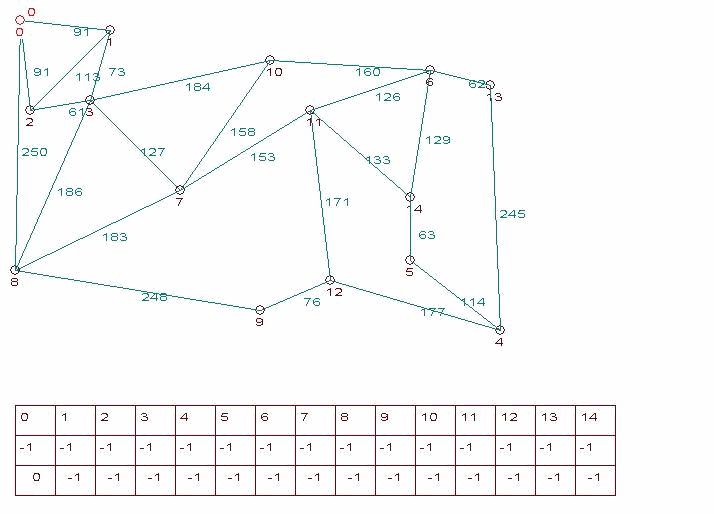
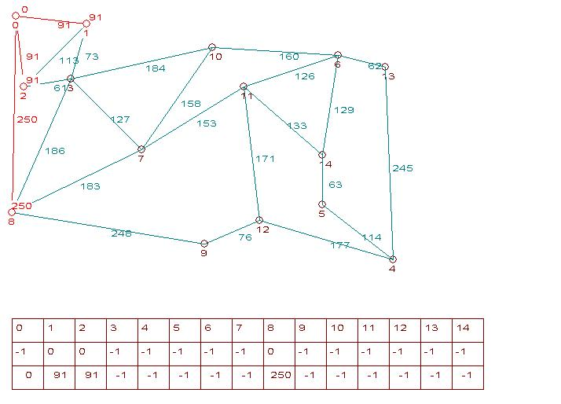
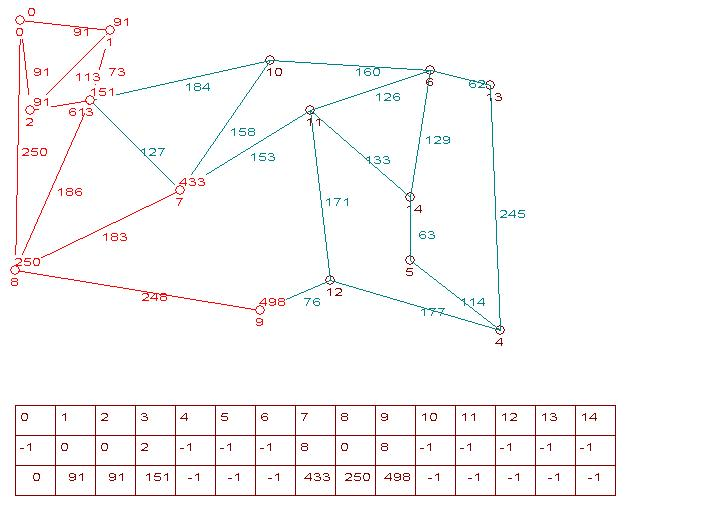
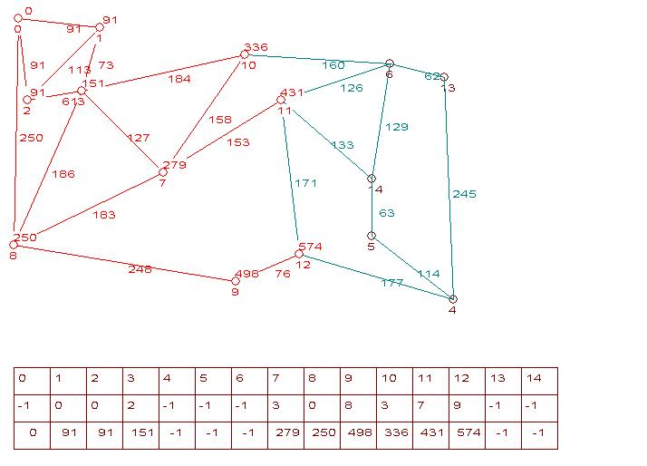
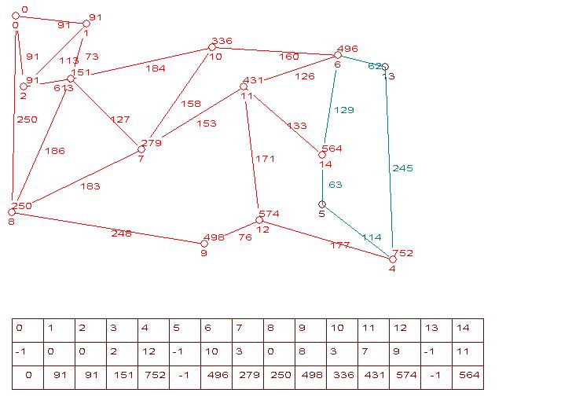
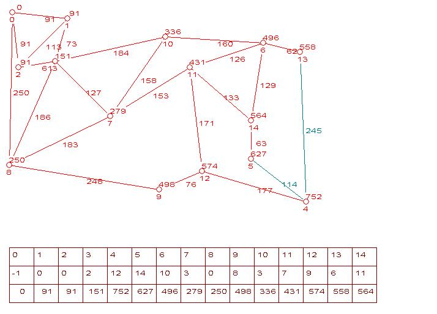
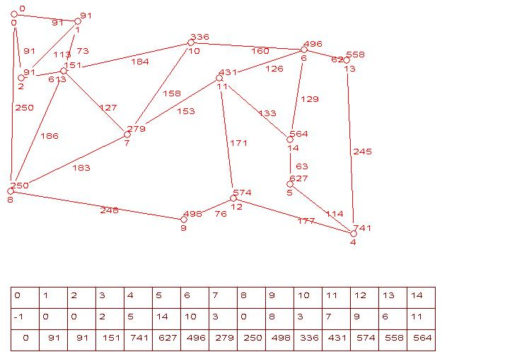
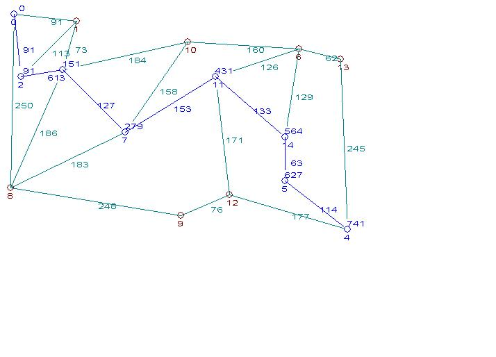

Illustration de la recherche du plus court chemin dans un graphe

Un tableau de trois lignes suit chaque image :
| ligne 1 | liste des numéros de villes, 0 <= i <= 14 |
| ligne 2 | meilleure distance trouvée à l'itération à laquelle correspond l'image, meilleure distance entre la ville 0 et la ville i = d*(0,i) |
| ligne 3 | ville ayant permis d'obtenir la distance d*(0,i), c'est la ville précédent la ville i dans le meilleur chemin |







